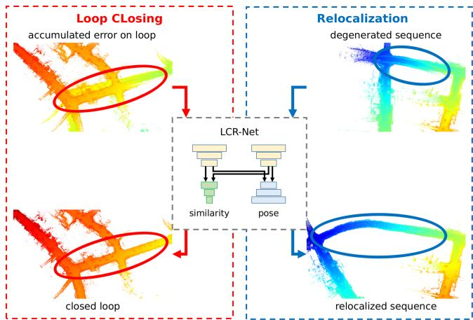
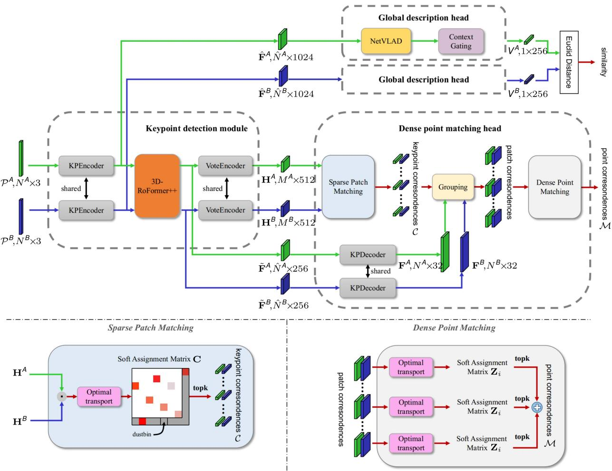
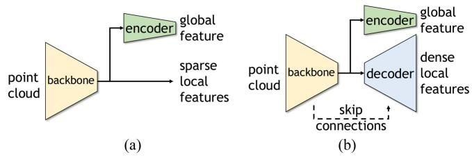
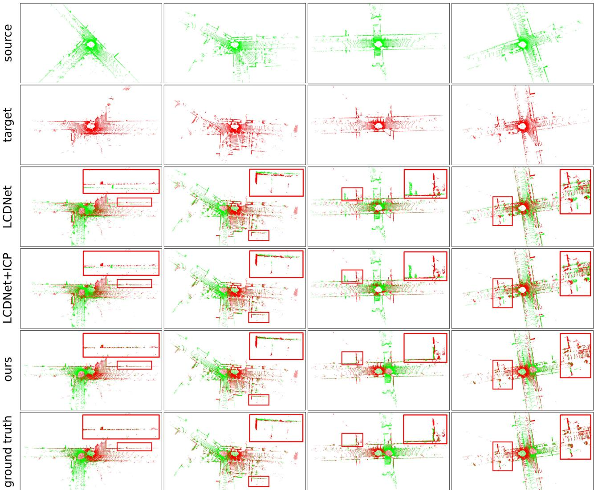
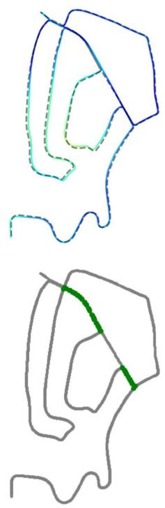

一个共享 backbone 同时出「全局描述子（检索）」和「稠密匹配（6-DoF 位姿）」，把检索这条线一路推到回环 + 重定位一体，并正面回答第一季 0014 的假阳性铁律 🔁
读懂 LCR-Net 怎么把「检索候选」和「算 6-DoF 位姿」塞进同一个网络；搞清楚它为什么是完整系统（回环 + 重定位，A-LOAM 后端，重定位 2.5 Hz / 回环 1 Hz）；并正面回答第一季 0014 的回环假阳性铁律：学习式方法把假阳性率压下去了吗、代价是什么、又带来了哪些新失效模式。
0011「深度学习先吃掉匹配与检索」——检索那一半的答案：从 DBoW2（0134）的 tf-idf 词袋，到 Scan Context（0135）的手工几何描述子，到 SALAD（0138）的最优传输聚合，今天 LCR-Net 用 NetVLAD + 学习到的稀疏特征把 LiDAR 检索也端到端化。0014 的假阳性铁律（一次假阳性毁整张地图）是本课必须正面回答的旧债。0136 的 LCDNet 是 LCR-Net 的直接前身与对比基线。
SLAM 跑久了会「记错路」：同一个地方转两圈，系统却没认出「这就是刚才那地儿」，于是地图越画越歪（漂移）。认出「咦，回到老地方了」这根操作叫回环检测（Loop Closing）。除了认路，SLAM 还常需要被「重新摆正」——比如被绑架后重新定位自己（重定位，Relocalization）。
过去这两件事是两套流程：先靠描述子找「可能是同一处」的候选帧（检索），再用 ICP 这类几何方法一点点对齐算位姿（注册）。LCR-Net 的野心是：一个网络一次前向，既吐出「最像的候选」，又直接算出 6 个自由度的相对位姿，把回环和重定位一次性解决，而且能实时跑。
术语先露脸先解释：6-DoF = 6 自由度（3 个平移 x/y/z + 3 个旋转 roll/pitch/yaw）；head = 网络末端分叉出的一个任务分支；backbone = 大家共用的主干特征提取器；NetVLAD = 把一堆局部特征聚成一个固定长度全局向量的老办法（见 0136）；Sinkhorn = 一种把「谁配谁」的打分矩阵迭代归一化成合法一一对应的算法（见 0138）。
把这一块的检索线拉直看：0134 DBoW2（手工词袋）→ 0135 Scan Context（手工几何极坐标描述子）→ 0136 LCDNet / OverlapTransformer（第一次用深度学习做 LiDAR 描述子 + 位姿回归）→ 0137 BEVPlace / SeqOT（鸟瞰图 + 序列）→ 0138 SALAD / R²Former（图像 VPR 的聚合巅峰）→ 0139 Hybrid（CNN+Transformer 混合）。到 0140，LCR-Net 干的是 0136 那一脉的「升级终局」：不仅检索，还把注册（算位姿）也学进去，并且回环 + 重定位共用一个模型。
所以本课是整条检索支线的收口：前面所有「怎么把一帧压成一个好描述子」的功夫，在这里被收编成「候选检索 head」；而「描述子找到候选后怎么对齐」，则被另一路 head 用学习的稠密匹配替代掉 ICP。下一节 0141 会拐去另一条支线（PoseNet / DeepVO）——用深度学习直接从图像回归位姿，与本课的 LiDAR 路线互补。
先读图 1（总览）和图 3（流水线），建立整机印象。输入是原始点云（不是图像，KITTI / MulRan / Ford / Apollo / KITTI-360 都用）。主干 KPEncoder（VGG 式 KPConv）先把点云下采样成均匀关键点，带每点特征 $\hat{\mathbf F}$。然后 3D-RoFormer++ 做旋转位置编码的跨图上下文聚合，VoteEncoder 用投票偏移把均匀点推到显著区并聚类出投票特征 $\mathbf H$。到分叉口：
用均匀特征 $\hat{\mathbf F}$ 经 NetVLAD 聚成向量，MLP 压维，再过 context gating 得到全局描述子，用于「从地图里找最像的那一帧」。
用投票特征 $\mathbf H$ 算打分矩阵，加 dustbin + Sinkhorn 得软分配取 Top-N 对应，再 point-to-node 扩展到 patch 内稠密匹配，最后 LGR（加权 SVD + 假设验证）求 6-DoF。
把相对位置写成旋转矩阵 $R_{\Theta_j-\Theta_i}$ 做 pose-aware 注意力；改进原版：非线性 sigmoid 旋转映射改为线性 Linear，并加边界惩罚获得平移不变性。
投票偏移把均匀下采样点移向几何显著区并质心聚类。反直觉发现：匹配点的覆盖度 / 内点比比单点精度更关键，VoteEncoder 正是靠提升内点比拿到大增益。

原图想说啥：Fig. 1. Our proposed LCR-Net for loop closing and relocalization. LCR-Net 的总框架：共享 backbone 出三类稀疏特征，再分两路 head（全局描述子 / 稠密匹配）同时服务回环与重定位。
怎么看：左半是特征提取（KPEncoder → 3D-RoFormer++ / VoteEncoder），右上是检索 head 出全局描述子去地图里查候选，右下是匹配 head 出 6-DoF 位姿。两条线共用同一份特征，所以「找候选」和「算位姿」不会各说各话。
要记住的一句话：检索与位姿共用一个 backbone，避免了「描述子说像、几何对齐却对不上」的两段式割裂。

原图想说啥：Fig. 3. Pipeline overview. LCR-Net consists of three main components: 特征提取、全局描述子（检索）、稠密匹配（位姿）三大件串成 coarse-to-fine 流水线。
怎么看：coarse（粗）是先靠全局描述子从大地图里捞候选；fine（细）是只在候选帧之间做稠密匹配算精确位姿。粗到细分摊了计算，也分摊了出错风险。
要记住的一句话：coarse-to-fine 是它能实时化的关键——不在全图每帧都做昂贵对齐，只对齐「已经被描述子初步认可」的候选。
检索 head 和 0136 学的 NetVLAD 一脉相承：把均匀关键点特征聚成固定长度向量，再 MLP 压维。LCR-Net 多加了一道 context gating $V = CG(X) = \sigma(WX+b) \otimes X$——一个按通道重要性开的「门」：重要的维度放大、不重要的压住。训练时用 triplet loss（正样本 overlap > 0.3，每样本 6 正 6 负），逼「真回环」的描述子比「假相似」更靠近。
人话翻译：把 NetVLAD 聚出来的全局描述子再过一道「按重要性开关」的门——哪些维度最能区分地点就放大，哪些维度是噪声就压住，让检索时最该被注意的特征更突出，榜首更稳。
图 2 把常见框架和本文框架摆一起比：传统是「描述子检索 → 几何 ICP 注册」两段独立；LCR-Net 是「描述子检索 + 学习匹配注册」一体。检索数字（Table I）：KITTI AUC 0.958 / R@1 0.937 / R@1% 0.993；Ford Campus AUC 0.972。LCDNet 的 KITTI AUC 0.961 略高，但 Ford 上 0.961 < LCR 0.972——说明跨数据集更稳。

原图想说啥：Fig. 2. Comparison of common frameworks and our framework for similarity estimation：常见两段式（描述子 + ICP）vs LCR-Net 一体式（描述子 + 学习匹配）。
怎么看：重点看「注册」那一步——别人用迭代最近点 ICP 这类纯几何优化，LCR-Net 用学习的稠密匹配直接出位姿，所以候选一旦检索对，位姿也不用另起炉灶。
要记住的一句话：它把「检索」和「位姿」从串联改成了并联，共享特征、一次前向完成。
匹配 head 是 LCR-Net 比 LCDNet 多出来的「第二只手」。稀疏对应用打分矩阵 $C = H^A H^B / \sqrt{d_c}$，加 dustbin 行/列（见 0138 说过的 SuperGlue 式套路）再用 Sinkhorn 迭代行列归一化得软分配，取 Top-$N_c$ 对应；再把关键点扩展到 patch（point-to-node），patch 内用 KPDecoder 恢复的逐点描述子再做一次 Sinkhorn 得稠密匹配；最后 LGR（local-to-global registration，加权 SVD + 假设验证）求 6-DoF。
关键数字（闭环注册，KITTI-00/08，RR 多已饱和 100%）：LCR-Net RTE 0.04 m / RYE 0.09°，而 LCDNet 是 0.11 / 0.12；在 overlap > 0.3、相距达 15 m 的更难集上唯一保持 100% RR；翻译误差比 LCDNet+ICP 在 seq00 降 64%、seq08 降 16%。图 6 把「用 LCDNet 初始化再做注册」的定性结果拉出来比，LCR-Net 的对应点更干净。

原图想说啥：Fig. 6. Qualitative comparison of registration using LCDNet as an initialization：以 LCDNet 初始化做注册时，LCR-Net 的对应点与对齐质量更好。
怎么看：看彩色对应点连线——LCR-Net 的线更整齐、跨源噪声点更少，说明 VoteEncoder 提升的内点比（IR）确实转化为更稳的位姿。
要记住的一句话：位姿精度来自「内点比」而非「单点更准」，这是 LCR-Net 反直觉的取胜点。
LCR-Net 不是裸模型，而是个完整系统：前端用 A-LOAM，回环与重定位都由 LCR-Net 提供。速度（Table V）：候选描述子提取 50 ms，map 查询 5 ms，注册用 LGR 仅 13 ms（总 306 ms），比 RANSAC 版（683 ms）快约 30×——这就是它能在线化的根本原因。系统实测频率：重定位 2.5 Hz、回环 1 Hz。
在 KITTI-02 上，SC+ICP 的 APE 是 4.9 m，集成 LCR-Net 后降到 4.2 m；连续重定位（MulRan）RR 97.89 / 98.22%，远高于 RDMNet+RANSAC 的 87.09%，RRE 降 43%、RTE 降 20%。图 8 把 A-LOAM 集成 LCR-Net 的全局轨迹和对比法摆一起：LCR-Net 的轨迹收得更紧、回环处不再翘起。

原图想说啥：Fig. 8. Performance of A-LOAM with integrating LCR-Net compared with ...：集成 LCR-Net 后 A-LOAM 的全局一致性明显更好。
怎么看：对比各方法的估计轨迹与真值——LCR-Net 那条的回环闭合处没有「错层」，说明回环一旦正确触发，地图就被牢牢焊住，不再累积漂移。
要记住的一句话：正确的回环把地图「焊死」，错误的回环把地图「拽歪」——下一节用一张自绘图把后者的代价画给你看。
第一季 0014 立过铁律：回环假阳性是 SLAM 最贵的错误——一次错连，整张地图被错误约束拉歪，且不可逆。学习式方法（LCR-Net 是代表）把假阳性率压下去了吗？答案是部分压下去，但换了代价，也带来新失效模式。
双保险降低了假阳性：检索 head 用 triplet（正样本需 overlap>0.3）先过滤「像但不重叠」的难负；位姿 head 的 LGR 带假设验证，对齐不过关就不采纳。难集（overlap>0.3、15 m）上 LCR-Net 是唯一保持 100% RR 的方法，说明「像但其实是异地」的假阳性被显著压住。
① 算力代价：50 ms 描述子 + 13 ms LGR，比纯几何 Scan Context（7.4 ms，见 0135）重得多，只能做到回环 1 Hz / 重定位 2.5 Hz；② 数据代价：依赖大量带位姿标签的点云训练，换传感器/换场景要重训；③ 不可解释：错在哪一步（检索错还是匹配错）不如几何法直观。
① 分布外失效：训练没见过的结构（长走廊、退化场景）靠「退化关键帧」机制兜底，仍可能整段失锁；② 检索-匹配不一致：描述子说像、但 LGR 假设验证被噪声骗过仍可能采纳；③ 投票偏差：VoteEncoder 推点若偏向某类几何，会在同类场景过匹配。
学习式没有「消灭」假阳性，而是把假阳性从「几何对齐易错」转成「需靠训练覆盖 + 假设验证兜住」。铁律依然成立：假阳性依旧毁地图，只是现在更稀有、且更难事后定位根因。
原图想说啥：自绘图。左半是正确回环——机器人绕回老地方，绿色闭环约束把地图焊死、消除漂移；右半是假阳性——两处本不相同的地点被红色回环错误连上，整张地图被强行拉伸对齐而变形。
怎么看：看两条红线。一条是「错误回环边」本身（实线），一条是「地图被迫变形」的后果（虚线牵引）。变形一旦写进因子图/地图，后续所有帧都跟着错，这正是 0014 铁律说的「一次假阳性毁整张地图」。
要记住的一句话：回环约束是双向的——对的回环消除漂移，错的回环传播错误；学习式让错回环更稀有，但代价与失效模式都换了形。
这张图在说什么：LCR-Net 的「双保险」不是一句形容词，而是前后两道具体的闸——第一道在检索环节（描述子的重叠度要够），第二道在配准环节（假设验证的残差要够）。三条车道是三种典型情形。
怎么看：先看两条竖虚线，那是两道闸的位置；再横着看每条车道——车停在哪条竖虚线左边，就说明它被哪道闸拦下了。重点看第三条车道。
要记住的一句话：假阳性不是靠「描述子更准」消灭的，而是靠两个独立环节各挡一次把它变得稀有——代价也正来自这里：两道闸都要算，回环就只能做到 1 Hz。
第一季 0014 说「一次假阳性毁整张地图」。下面两种系统，哪种的假阳性更致命？
两者假阳性都致命（铁律不变）。但机制不同：几何法靠 ICP 残差门槛挡假阳性，易在「像但不重叠」处翻车；学习式多加检索 triplet 过滤 + LGR 假设验证两道闸，假阳性更稀有，可一旦训练分布外失效仍会毁图。所以不是「谁更安全」，是「假阳性从频繁变稀有、但根因更难查」。
两者假阳性都致命（铁律不变）。LCR-Net 靠检索 triplet + LGR 假设验证把假阳性变得更稀有，但代价是算力/数据依赖与分布外失效。结论：学习式没有消灭假阳性，只是换了形态——这正是本课对 0014 的正面回答。
把第七季「场景识别 / 回环」整块收个口。检索范式三分（见 0138/0139）：① 单阶段全局检索（CricaVPR / SALAD / Hybrid，纯图像）；② 检索 + 重排序（R²Former，图像）；③ 检索 + 位姿（LCR-Net、SeqOT 仅检索，点云）。LCR-Net 是③里最完整的一个——它把「检索」和「位姿」焊进一个共享 backbone，且是首个带深度学习回环 + 重定位的 LiDAR SLAM 系统。
回看 0011 的断言「深度学习先吃掉匹配与检索」：到本课，匹配（LCR-Net 的稠密匹配 head，替代 ICP）与检索（NetVLAD + context gating，替代 Scan Context）在 LiDAR 侧都被吃掉了，且回环 + 重定位一体。但铁律 0014 提醒：吃掉的只是「频率与精度」，没吃掉「假阳性的毁灭性」——只是把它推到了更深处。
下面哪个顺序最贴本块叙事？
正确。手工词袋（0134）→ 手工几何描述子（0135）→ 学习描述子 + 位姿回归（0136）→ 学习检索 + 位姿一体的完整系统（0140）。每一步都在把「人写的规则」换成「学出来的特征」，并把功能从单检索扩到回环 + 重定位。
反了。进化方向是手工 → 学习、单检索 → 检索 + 位姿。正确序：DBoW2 → Scan Context → LCDNet → LCR-Net。
省了「两段式」里的独立几何注册（ICP）。传统流程：描述子找到候选 → 另跑 ICP 算位姿，两步可能不一致（描述子说像、ICP 却对不上或对齐错）。LCR-Net 让位姿 head 和检索 head 共享同一份 backbone 特征，候选一旦检索对，位姿也由学习匹配直接给出，不会出现「检索对、注册错」的割裂。代价是模型更重、需训练数据。
LGR（local-to-global registration）用加权 SVD + 假设验证，输入是 Sinkhorn 已经给出的高质量软分配对应（内点比高），只需少量假设验证即可收敛；RANSAC 要从含大量外点的原始对应里随机采样猜模型，迭代次数随外点率爆炸。论文：LGR 注册仅 13 ms vs RANSAC 683 ms，且精度相当。这也是能在线跑（回环 1 Hz）的前提。
Sec.VI-H 的反直觉发现：匹配点的覆盖度 / 内点比（IR）比单点位置精度更影响最终位姿。VoteEncoder 把均匀点投票到显著区、提升内点比，带来比「把每个点算得更准」更大的位姿增益。直觉：位姿由一堆对应加权平均得出，外点会系统性拽偏；先保证「多数是内点」，比「每个点更准但仍有不少外点」更重要。
铁律：一次假阳性毁整张地图。LCR-Net 虽用 triplet（正样本需 overlap>0.3）+ LGR 假设验证把假阳性压稀，但：① 分布外场景（长走廊、退化）靠退化关键帧兜底，仍可能整段失锁；② 检索-匹配可能不一致——描述子说像、LGR 被噪声骗过仍采纳；③ VoteEncoder 投票偏差导致同类场景过匹配。所以假阳性未消灭，只是更稀有、根因更难查。
共同点：都用 NetVLAD 类描述子 + 学习位姿，且都只吃点云。差异：① LCDNet 是「描述子 + UOT 位姿回归」，LCR-Net 是「描述子 + 稠密匹配（Sinkhorn）+ LGR」；② LCR-Net 额外做重定位，且是回环 + 重定位统一模型，LCDNet 只做回环节点；③ LCR-Net 有 VoteEncoder / 3D-RoFormer++ 提升内点比；④ 数字上 LCR-Net 在检索（Ford AUC 0.972 > 0.961）与注册（RTE 0.04 m < 0.11 m）双维度超越 LCDNet。